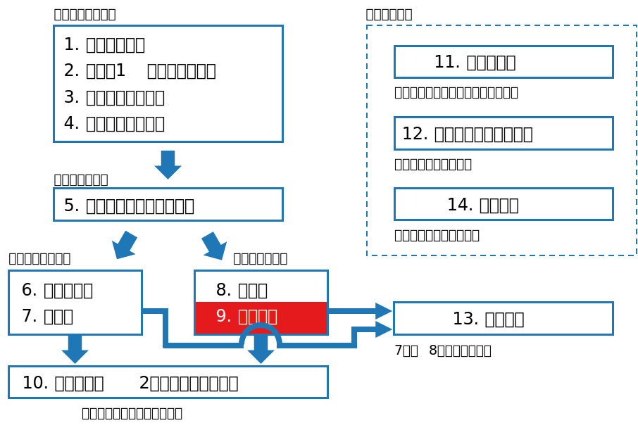

class: middle, center # 数理統計学特論II<br>第3回 区間推定 奥 牧人 (和漢研) 2022/??/?? --- # 前回の復習 前回の目的 * 検定の「良さ」に関する用語と概念を理解すること 前回の達成目標 * 検出力の意味を説明できる。 * ネイマン・ピアソンの補題の意味を説明できる。 * 一様最強力検定の意味を説明できる。 * 不偏検定の意味を説明できる。 * 尤度比検定の意味を説明できる。 --- # 今回の位置付け  --- # 今回の目的と達成目標 目的 * 区間推定の意味と検定との対応関係を理解すること 達成目標 * 信頼区間の意味を説明できる。 * 信頼区間や信頼域と検定の対応関係を説明できる。 * 信頼区間の解釈上の注意点を説明できる。 * 一様最強力不偏信頼域の意味を説明できる。 --- # 予習用キーワードの確認 * $95$ %信頼区間 * $t$ 分布 --- # Outline 1. 区間推定の例 2. 信頼域の構成法 3. 信頼区間の解釈 4. 信頼区間の最適性 5. 最尤推定量に基づく信頼区間 6. 同時信頼域に関する諸問題 --- # Outline 1. **区間推定の例** 2. 信頼域の構成法 3. 信頼区間の解釈 4. 信頼区間の最適性 5. 最尤推定量に基づく信頼区間 6. 同時信頼域に関する諸問題 --- # 区間推定の例 * 正規分布の平均の区間推定について考える。 * 母平均 $\mu$、母分散 $\sigma^2$、標本サイズ $n$ とする。 * 点推定 <div>$$\bar X=\frac{1}{n}\sum_{i=1}^n X_i,\quad s^2=\frac{1}{n-1}\sum_{i=1}^n (X_i-\bar X)^2$$</div> * $\bar X\sim N(\mu,\sigma^2/n)$ だが、$\sigma$ は未知なので $s$ を使って $\bar X$ の標準偏差を推定 $$\hat\sigma_{\bar X}= \frac{s}{\sqrt{n}}$$ * これを $\bar X$ の標準誤差という。 --- # 区間推定の例、続き * $95$ %信頼区間は近似的には $\bar X\pm 1.96\,\hat\sigma_{\bar X}$ の範囲 * 意味は、母平均 $\mu$ を $95$ %の確率で含む区間 * $X$ が大文字 (確率変数) であることに注意 * $1-\alpha$ 信頼区間 <div>$$\bar X\pm t_{\alpha/2}(n-1)\hat\sigma_{\bar X}$$</div> きちんと書くと <div>$$[L(X),U(X)]=\left[\bar X-t_{\alpha/2}(n-1)\frac{s}{\sqrt{n}}, \bar X+t_{\alpha/2}(n-1)\frac{s}{\sqrt{n}}\right]$$</div> * ここで $t_{\alpha/2}(n-1)$ は自由度 $n-1$ の $t$ 分布の両側 $\alpha$ 点 --- # 合っているか確認 * 実際に計算してみると <div>$$\begin{align}&P(L(X)\leq\mu\leq U(X))\\\\&=P\left(\bar X-t_{\alpha/2}(n-1)\frac{s}{\sqrt{n}}\leq\mu\leq \bar X+t_{\alpha/2}(n-1)\frac{s}{\sqrt{n}}\right)\\\\&=P\left(-t_{\alpha/2}(n-1)\frac{s}{\sqrt{n}}\leq\bar X-\mu\leq t_{\alpha/2}(n-1)\frac{s}{\sqrt{n}}\right)\\\\&=P\left(-t_{\alpha/2}(n-1)\leq\frac{\sqrt{n}(\bar X-\mu)}{s}\leq t_{\alpha/2}(n-1)\right)\\\\&=1-\alpha\end{align}$$</div> --- # 一般の場合 * $1$ 次元の母数 $\theta\in\Theta$ に対し、 $$P(L(X)\leq\theta\leq U(X))\geq 1-\alpha,\quad\forall\theta\in\Theta$$ という性質を持つ区間を、信頼係数 $1-\alpha$ の信頼区間という。 * $k$ 次元の場合は、信頼係数 $1-\alpha$ の信頼域または同時信頼域という。 $$P(\theta\in S(X))\geq 1-\alpha,\quad\forall\theta\in\Theta$$ --- # Outline 1. 区間推定の例 2. **信頼域の構成法** 3. 信頼区間の解釈 4. 信頼区間の最適性 5. 最尤推定量に基づく信頼区間 6. 同時信頼域に関する諸問題 --- # 区間推定と検定の関係 * 以下の検定問題を考える $$H_0:\theta=\theta_0\quad\mathrm{vs.}\quad H_1:\theta\neq \theta_0$$ * 有意水準 $\alpha$ の (非確率化) 検定の受容域を $A(\theta_0)$ とおく $$P(X\not\in A(\theta_0)\mid H_0)\leq \alpha$$ 書き直すと $$P(X\in A(\theta_0)\mid H_0)\geq 1-\alpha$$ * [補題] 全ての $\theta_0$ に対して上式を満たす $A(\theta_0)$ が存在するならば、以下の集合は信頼係数 $1-\alpha$ の信頼域である $$S(X)=\\{\theta\mid X\in A(\theta)\\}$$ --- # 証明 * 任意の $\theta_0\in\Theta$ に対して、$S(X)=\\{\theta\mid X\in A(\theta)\\}$ より $$\theta_0\in S(X)\quad\Leftrightarrow\quad X\in A(\theta_0)$$ となるから $$P(\theta_0\in S(X)\mid\theta=\theta_0)=P(X\in A(\theta_0)\mid\theta=\theta_0)\geq 1-\alpha$$ 従って、$S(X)$ は信頼係数 $1-\alpha$ の信頼域である。 --- # 先ほどの例 * 両側 $t$ 検定で $t$ 統計量が受容域に入ること <div>$$-t_{\alpha/2}(n-1)\leq\frac{\sqrt{n}(\bar X-\mu)}{s}\leq t_{\alpha/2}(n-1)$$</div> * $\mu$ が信頼区間に入ること <div>$$\bar X-t_{\alpha/2}(n-1)\frac{s}{\sqrt{n}}\leq\mu\leq \bar X+t_{\alpha/2}(n-1)\frac{s}{\sqrt{n}}$$</div> が対応していた。 --- # Outline 1. 区間推定の例 2. 信頼域の構成法 3. **信頼区間の解釈** 4. 信頼区間の最適性 5. 最尤推定量に基づく信頼区間 6. 同時信頼域に関する諸問題 --- # 信頼区間の解釈上の注意 * 古典的統計学では、信頼区間や信頼域が実現値の場合、信頼係数 $1-\alpha$ のことを **確率と言ってはいけない** ことになっている。 * その理由は、母数 $\theta$ の値が未知ではあるものの固定値のため、<br>ある区間は「含む」か「含まないか」のいずれかだからである、と通常説明される。 * 極端な例 * 標本と関係なく確率 $1-\alpha$ で母数空間全体、確率 $\alpha$ で空集合となる信頼域 $S$ を考える。 $$P(S=\Theta)=1-\alpha,\quad P(S=\emptyset)=\alpha$$ * $\Theta$, $\emptyset$ のいずれが実現した場合でも、$S$ が $\theta$ を含む確率は $1-\alpha$ とは異なる。 --- # とはいえ、釈然としない * 例えば、歪みの無いコインを投げ、その結果を見る前に手で隠してしまったとする。 * このとき、表である確率を $1/2$ と推測することは合理的と考えられるが、古典的統計学の考え方はそれを禁止することになる。 * ベイズ統計学では、母数を固定値でなく確率変数とみなすので、この問題は生じない。 * その場合、信頼区間ではなく信用区間と呼ぶ。 --- # Outline 1. 区間推定の例 2. 信頼域の構成法 3. 信頼区間の解釈 4. **信頼区間の最適性** 5. 最尤推定量に基づく信頼区間 6. 同時信頼域に関する諸問題 --- # 信頼区間の最適性 * 信頼区間の最適性は検定との対応関係から自然と出てくる。 * 不偏検定 (有意水準は $\alpha$) $$\begin{align}\beta(\theta)\leq\alpha,\quad\forall\theta\in\Theta_0\\\\\beta(\theta)\geq\alpha,\quad\forall\theta\in\Theta_1\end{align}$$ * 不偏信頼域 (信頼係数は $1-\alpha$) <div>$$\begin{align}P(\theta_0\in S(X)\mid\theta=\theta_0)&\geq 1-\alpha,\quad\forall\theta_0\\P(\theta_1\in S(X)\mid\theta=\theta_0)&\leq 1-\alpha,\quad\forall\theta_0,\forall\theta_1,\theta_0\neq\theta_1\end{align}$$</div> --- # 信頼区間の最適性、続き * 一様最強力不偏検定 ($\delta,\delta^*$ は不偏かつ有意水準 $\alpha$) <div>$$\beta_{\delta^*}(\theta)\geq \beta_\delta(\theta),\quad\forall\theta\in\Theta_1,\forall\delta$$</div> * 一様最強力不偏信頼域 ($S,S^*$ は不偏かつ信頼係数 $1-\alpha$) <div>$$\begin{align}P(\theta_1\in S^*(X)\mid\theta=\theta_0)\leq P(\theta_1\in S(X)\mid\theta=\theta_0),\\\forall\theta_0,\forall\theta_1,\theta_0\neq\theta_1,\forall S\end{align}$$</div> * 真の母数以外の母数が含まれる確率が不偏の中で最小 * 母数空間上の体積 (区間の場合は長さ) も不偏の中で最小 --- # Outline 1. 区間推定の例 2. 信頼域の構成法 3. 信頼区間の解釈 4. 信頼区間の最適性 5. **最尤推定量に基づく信頼区間** 6. 同時信頼域に関する諸問題 --- # 最尤推定量に基づく信頼区間 * 最尤推定量 $\hat\theta$ の標本分布は $n$ が大きいとき以下で近似出来る $$\hat\theta\stackrel{\cdot}{\sim}N\left(\theta,\frac{1}{nI(\theta)}\right)$$ * ここで $I(\theta)$ は $n=1$ のときのフィッシャー情報量 * 受容域 (正規分布の両側 $\alpha$ 点を $z_{\alpha/2}$ とする) <div>$$-z_{\alpha/2}\leq\sqrt{nI(\theta)}(\hat\theta-\theta)\leq z_{\alpha/2}$$</div> * 信頼区間 <div>$$\hat\theta-\frac{z_{\alpha/2}}{\sqrt{nI(\theta)}}\leq\theta\leq\hat\theta+\frac{z_{\alpha/2}}{\sqrt{nI(\theta)}}$$</div> --- # Outline 1. 区間推定の例 2. 信頼域の構成法 3. 信頼区間の解釈 4. 信頼区間の最適性 5. 最尤推定量に基づく信頼区間 6. **同時信頼域に関する諸問題** --- # 同時信頼域 * 母数が多次元の場合を考える。 $$\theta=(\theta_1,\ldots,\theta_k)$$ * 信頼域を要素毎の区間 $R_1,\ldots,R_k$ の直積で表すとする。 $$S=R_1\times\cdots\times R_k$$ * 例、$k=2$, $R_1=[0,1]$, $R_2=[0,1]$ なら正方形の範囲 * 各次元について以下が成り立つようにしておく。 $$P(\theta_i\in R_i)=1-\alpha',\quad\forall i$$ * 全体として信頼係数 $1-\alpha$ となるよう $\alpha'$ を調節する。 --- # ボンフェロニの補正 * 事象 $A_1,\ldots,A_k$ について一般に以下が成り立つ $$\begin{align}P(A_1\cup\cdots\cup A_k)&\leq P(A_1)+\cdots+P(A_k)\\\\(A_1\cap\cdots\cap A_k)^c&=A_1^c\cup\cdots\cup A_k^c\end{align}$$ * これらを用いて $$\begin{align}P(A_1\cap\cdots\cap A_k)&=1-P(A_1^c\cup\cdots\cup A_k^c)\\\\&\geq 1-P(A_1^c)-\cdots-P(A_k^c)\end{align}$$ * 各 $A_i$ を $\theta_i\in R_i$ となる事象とすれば、 $$P(\theta\in S)\geq 1-k\alpha'=1-\alpha$$ * 従って、$\alpha'=\alpha/k$ とすれば良い。 * 実用上は多次元の信頼域より多重検定でよく使う補正 --- # まとめ 区間推定の意味と検定との対応関係を説明しました。 1. 区間推定の例<br> <span class="times">!</span> 信頼区間の意味を説明できる? 2. 信頼域の構成法<br> <span class="times">!</span> 信頼区間や信頼域と検定の対応関係を説明できる? 3. 信頼区間の解釈<br> <span class="times">!</span> 信頼区間の解釈上の注意点を説明できる? 4. 信頼区間の最適性<br> <span class="times">!</span> 一様最強力不偏信頼域の意味を説明できる? 5. 最尤推定量に基づく信頼区間 6. 同時信頼域に関する諸問題 --- # 小テスト * Moodleで小テストに回答して下さい。 * **期限は今週中** (日曜の23:59まで) とします。 * 繰り返し受験して構いません。最高得点で成績をつけます。 --- # 次回の予習用キーワード * スチューデントの $t$ 検定 * ウェルチの $t$ 検定 * 対応のある $t$ 検定